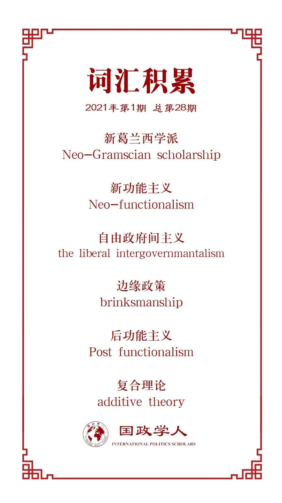

收录于合集

作品简介
【作者】 Simon Bulmer，英国谢菲尔德大学政治学教授；Jonathan Joseph，英国谢菲尔德大学政治学教授。
【编译】 朱晓洁（国政学人编译员，中国人民大学硕士生）
【校对】 赵怡雯
【审核】 杨紫茵
【排版】 苏语涵
【美编 】张越涵
【来源】 Simon Bulmer, Jonathan Joseph, European integration in crisis? Of supranational integration, hegemonic projects and domestic politics, European Journal of International Relations , 2016, Vol. 22(4) 725-748, DOI:10.1177/1354066
【归档】 《国际关系前沿》2021年第1期，总第28期。
期刊简介
《欧洲国际关系杂志》 （European Journal of International Relations）是由赛吉出版公司（Sage Publications）代表欧洲政治研究联盟欧洲国际关系常设小组出版的季刊，发表国际关系学科全领域的同行审议学术文章，既关切理论争鸣的前沿，也注意国关研究社群中有当代和历史意义的主题。该刊2019年的期刊引用报告（JCR）影响因子为3.47。
**** **危机中的欧洲一体化？超国家一体化、霸权项目和国内政治 ******
European integration in crisis?
Of supranational integration,hegemonic projects and domestic politics
Simon Bulmer Jonathan Joseph
内容提要
欧盟面临许多挑战，使一体化理论研究再次成为焦点。主流一体化理论只是部分地揭示了一体化的某些特征，但面对新的现实发展情况，主流一体化理论解释力有限。不同的理论提供了关于一体化的竞争性、替代性解释，理论分工有利于丰富理论的内涵，但是内部立场的激烈交流忽视了不同一体化理论之间的共同点。欧洲一体化理论分工存在“二分法”的情况，一类关注经济发展对一体化的影响，另一类关注政治社会对一体化的影响。这篇文章希望可以提出一个批判性一体化理论，将国关理论中“结构——行为体”（structure- agency）的辩论成果引入到欧洲一体化理论架构中，借鉴了新葛兰西主义中的“霸权”（hegemony）的概念，吸收了主流一体化理论——新功能主义（Neo- fuctionalism）、自由政府间主义（Liberal intergovernmentalism）、新政府间主义（Neo- intergovernmentallism）、后功能主义（Post-fuctionalism）——对欧洲一体化新现实进行解释。
01
引入对“结构-行为体”关系的讨论
文章将“结构- 行为体”的辩论引入到欧盟研究中，采用了批判性现实主义的观点，以便对结构和行为体进行分类，从而将行为体置于适当的社会环境中。这种方法假设结构和行为体有不同的属性、权力和责任。结构是相对持久的，是在行为体之前存在。因此，它具有前沿性，并使这些行为体在它内部起作用的同时加以限制。与此同时行为体拥有自己不可剥夺的力量，特别是意向性、反身性和意识。虽然行为体可能无法选择他们采取行动的条件，但他们或多或少地了解这些条件并有能力采取行动。正是通过这些行动，社会结构才得以偶尔发生变化。结构的调节能力可能对主体在塑造行动和意识方面产生强烈的影响，而在这种情况下，有意识的行动可能产生无意识或无意的后果或结构结果。事实上，特别重要的是，政治分析表明，行为者通常只部分了解其行动的背景，某些行动可能由于不同结构因素的影响而产生无意识的后果。
在欧盟一体化研究中，“结构”有两个部分。首先是欧盟的体制框架。欧盟的体制结构、政策能力和共同体成果，这些因素决定了行为体的谈判战略。第二，宏观结构特征塑造了行为体的利益。这些特征包括全球经济、金融危机、重组社会关系的新自由主义尝试、与后冷战秩序有关的地缘政治和战略背景（如美国- 欧盟关系的转变）、新的证券化进程、国家角色的变化、国家- 社会关系的变化、向新的治理形式的转变、市民社会的发展和人口变化。欧盟的制度处于宏观结构和行为体压力之间。宏观结构的影响可能会对改变欧盟的制度框架施加压力，或许会导致改变，尽管有意识的行为体努力防止或避免这种情况发生。行为体可能寻求通过重塑所依据的结构来改变一体化进程，例如在全球经济或新型治理模式的一般潮流中的发展。然而，行为体可能也会寻求抵抗这种改变并且可能发展与一般条件不符的政治。机构因素也非常令人感兴趣，因为制度主义者、建构主义者和实践转变的倡导者都注意到机构和官僚在发展自己的行政动态，行为体的和互动结构的因素都是不可或缺的。
02
**
**
欧洲一体化是一个霸权项目
将霸权融入结构- 行为体的图像中意味着社会行为体建构政治项目的环境、机会和可能性。具体而言，文章认为霸权代表了结构和行为体之间的调和点，提供了对为什么特定事物在特定的时间和地点发展的解释。霸权在联系机构和将战略对策嵌入宏观层面议题的过程中非常有用。
第一步，要区分霸权和霸权项目。欧洲一体化可以被看作是一个薄弱的霸权项目，由许多次级利益和竞争利益之间的妥协组成。它需要在关键时刻作出大量的体制调整和历史妥协，而且由于其脆弱性和有争议性，它极易产生意想不到的后果。更准确地说，我们认为欧洲一体化不是一个单一连贯的项目，而是相互竞争的项目的结果。与新古典主义文学对跨国阶级利益的强调相反，我们认为这些项目是由不同层次的政治利益和经济动机驱动的。有些人具有更多的国内性质；另一些人则是由更多的全球动机驱动的，无论这是某种新自由主义项目还是欧洲的特定政治愿景。在将我们的分析局限于相互竞争的政治和经济动态时，我们注意到这是一种潜在的简化。例如，巴克（Buckel）探讨了欧洲法院是否正在将力量塑造成一个新的“法律霸权项目”。
第二步，认识到欧洲一体化本身并不是一种成功的霸权形式，当然也不是某种统一项目或愿景的结果。相反，最好将一体化视为跨越政治和经济领域竞争的各种项目的成果。体制结构、政策能力和共同体成果的形态不时地出现这些相互竞争的利益之间的历史性妥协。
将分析局限于经济问题，可以看到新自由主义关注金融化和不受限制的资本流动（正如对最近危机的反应所揭示的那样）所面临的相互竞争的经济利益。特别是在德国，欧洲的驱动经济、工业资本的强大利益和一个大的国内市场（新商业主义）以及基于规则的经济管理方法（秩序自由主义）迫使新自由主义金融驱动的项目妥协。
当审视政治动态时，显然不同的政治项目不能被简化为单一经济逻辑的概念，也可能与之相矛盾。事实上，今天仍然存在的一些政治项目早在当前的新自由主义议程前几十年就出现了。这些较老的项目从对欧洲截然不同的观点中汲取其合法性，并继续激发一系列往往阻碍新自由主义议程的政治利益。共同农业政策对低成本全球粮食生产者的保护主义就是一个例子。因此，将一体化进程视为只代表经济支柱的明确的新自由主义议程，从而淡化政治的作用，忽视了欧洲其他愿景的因果力量。
目前，在一体化的驱动因素方面可以确定两个要点：国内的重要性，反映在不同的政治战略、解决方案和计算中，利益更多地基于国内层面，表达和合法化机制也是如此；融合是由精英驱动的，但这些不应该被简化为不同的阶级或资本，这样做忽视了这些群体的具体政治和体制利益。
与具体的政治和经济变化相对应，文章提出了一个普遍的主张，即欧洲一体化过程可以与两个交叉的动态联系在一起，即：不断变化的政治形式的统治和从政府到治理的普遍转变，以及同时向下下放国家权力和政策的国际化，包括在共同安全和国防政策和战地服务团等非经济领域；以及普遍的经济变化，经济流动更加相互依存和加剧，金融化增加，市场调节方式改变，推动市场自由化，但以基于规则的秩序自由主义方针为条件，对欧盟的货币和财政政策以及保护社会供应的努力。
在国家范围内嵌入一个超国家项目时，这提出了两个重大挑战，霸权概念特别善于强调：协调不同规模的霸权；协调国家霸权所采取的不同政治形式。因此，正常的做法是期望在不同级别上有一些不同的项目，每个项目都有自己的政治和经济优先事项。虽然这不会使超国家项目变得不可能，但它更难实现和维持。不同层次的不同项目的存在意味着超国家项目是突然的，因为它们依赖但不能还原到某些基本的社会关系和利益。
03
从理论到现实
后马斯特里赫特时期的欧洲一体化具有若干关键特征：
1、政府首脑在指导整个进程以及欧洲经济和货币联盟、外交政策、司法和内政等个别组成部分方面发挥更大的作用（一个更强有力的战略决定政府间进程）。
2、越来越多的超国家一体化成果，因为有更多的政策领域例如货币政策、财政政策、银行监管、内政和能源安全的权限已经部分或全部转移到欧盟（更强的超国家结果）。
3、差别化一体化的增长作为一种体制修复模式，允许一些成员国，如欧元区或免护照申根区的成员国，获得更强的一体化成果（艰难的政府间谈判只会给内部人员带来更多的超国家成果）。
4、国内政治考虑增加了政治在超国家层面的渗透：从公投否决条约改革到抗议欧元区紧缩政策（挑战新功能主义和政府间主义的精英假设）。
译者评述
欧债危机、英国脱欧等欧盟面临的危机使欣欣向荣的一体化进程戛然而止，理论反思和重建也开始进行。批判性一体化理论同时吸纳了结构现实主义强调结构作用和建构主义强调行为体自主性的认识。通过引入“结构—行为体”关系的辩论表明欧洲一体化也是受结构和行为体相互作用影响的领域，这意味着一体化结果可能是有意的结果，也可能是无意识的结果。并且这让他们在研究中始终注意多种力量之间的相互作用。
主流一体化理论倡导或认同政治精英主导模式、注重意识形态因素的重要作用、谋求经济一体化带动政治一体化。这些理论无不强调精英人物的作用，忽视来自市民社会的利益诉求和价值追求，或者将普通民众作为一体化的消极受众。批判性一体化理论的创新在于借鉴新葛兰西主义的霸权以及上层建筑必须根植于社会关系之中的思想，从欧洲一体化危机中看到了除了推动一体化精英主义力量之外的多层级社会力量的重要性。霸权并不是由某一个阶级单独承担的, 而是由数个不稳定的特定联盟所维持的, 霸权表现了一种动态的结构。批判性一体化理论中的“霸权项目”可以理解为欧洲一体化不是单一的经济进程或政治进程，也不只是精英的游戏，而是数个社会项目竞争的进程，有广泛社会基础的项目就可以成为“霸权项目”。欧洲一体化在各种力量的竞争、拉扯中发展，其中有进步的力量也有保守的力量，进步的力量要求扩大和深化欧盟的改革，保守的力量要求暂缓改革甚至在现有的改革上退步，竞争的结果不一定是推动一体化进程，可能是阻止一体化继续发展。文章归纳的四种主要的项目可再分类为两类，项目一、四是进步力量，多由精英推动，项目二、三是保守力量，多由大众力量推动。根据目前观察到的情况，保守力量的影响正在增强。
一方面，批判性一体化理论纠正了一体化理论议程日渐狭隘的倾向，整合了主流一体化理论的解释，提供了对话的空间，有助于形成对欧洲一体化进程更为完整的认识。因此，它也标榜自己比其他的理论更加的“现实主义”。另一方面，批判性一体化理论展示了一个复杂的一体化进程图景，其中取得的成就都是巨大的社会力量碰撞、融合的结果。启示我们在研究欧洲一体化和欧盟的过程中，不仅要关注欧盟层面、国家层面这两个常见分析领域的事件，而且要关注国内公民社会和国际公民社会中的次国家领域和超国家领域非政府行为体、非精英行为体的“社会项目”。不仅要关注一体化的成就，也要关注一体化中夭折的项目，这些夭折的项目中往往蕴含着经常被忽视而实际上不应该被忽视的激烈的社会力量竞争。
参考文献
[1]Simon Bulmer,Jonathan Joseph, ‘European integration in crisis?Of supranational integration, hegemonic projects and domestic politics’, European Journal of International Relations ,2016,Vol. 22(4), 725 -748
[2]白云真，《新葛兰西学派及其批评》，《世界经济与政治》，2011年第二期。
[3]金玲，《欧洲一体化困境及其路径重塑》，《国际问题研究》，2017年第三期。
[4]赵雷，《当前主流一体化理论的本质》，《中国社会科学报》。
词汇整理

文章观点不代表本平台观点，本平台评译分享的文章均出于专业学习之用, 不以任何盈利为目的，内容主要呈现对原文的介绍，原文内容请通过各高校购买的数据库自行下载。

国政学人
支持学术公益与知识传播
微信扫一扫赞赏作者 __赞赏
已喜欢，对作者说句悄悄话
取消 __
发送给作者
发送
最多40字，当前共字
上一页 1/3 下一页
长按二维码向我转账
支持学术公益与知识传播
受苹果公司新规定影响，微信 iOS 版的赞赏功能被关闭，可通过二维码转账支持公众号。